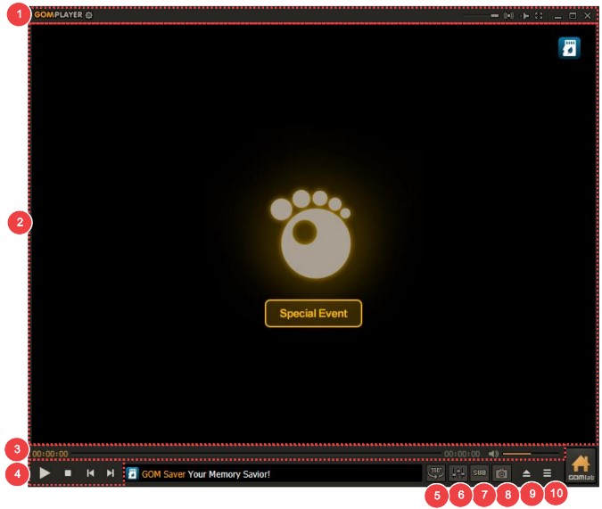
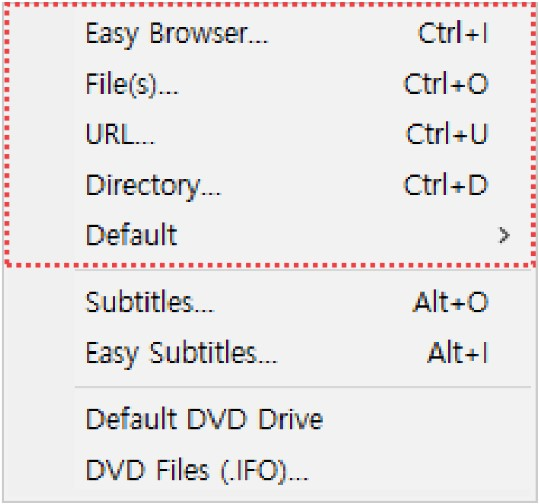

零基础五分钟搞定 GOM Player——从此看片不再卡壳
第一次打开播放器不知道怎么下手？这篇从安装到第一次播放全程带路，不需要任何基础。三个新手必碰的功能 + 三个常见坑，看完直接上手。
这篇能带你从完全不懂到用起来，不需要任何基础。
它到底是干嘛的——一个生活化的类比
你有没有过这样的经历：下载了一部电影，双击打开，Windows 自带播放器要么打不开、要么卡得要死、要么字幕挂不上？GOM Player 就是解决这个问题的。
打个比方：系统自带播放器像家里的电饭煲，能煮饭但只有一个模式；GOM Player 像一台厨师机，煮饭、和面、打奶油都能搞定，而且每种模式都调得很顺手。它支持几乎所有常见的视频格式——mp4、mkv、avi、rmvb……不用再为了一个文件到处找解码器，打开就能播。
五分钟上手——从下载到第一次跑通
第一步当然是装软件。去它的官网，从下载拿安装包，一路点"下一步"就行，没有乱七八糟的捆绑。装完桌面会出现一个小鲨鱼图标（GOM 是 Gretech Online Movie 的缩写，韩国公司做的）。
第二步，打开你的第一个视频。最简单的方式有好几种，选你觉得顺手的：
- 拖拽：直接把视频文件拖到 GOM Player 的窗口里，立即开始播放。这是我最推荐的，没有之一。
- 简单打开：按 F2，弹一个小窗口定位文件，双击就行。
- Ctrl + O：调用 Windows 原生资源管理器，可以多选文件一起塞进播放列表。
- 打开文件夹：整季动漫、连续剧，选中目录一次性导入，按文件名排序依次播放。

播放起来之后，底部一排按钮就是你的控制面板：左边音量、中间进度条、右边全屏。空格暂停/继续，左右箭头快退快进 5 秒，上下箭头调音量——这些快捷键几乎所有播放器都通用，不用特意记。
想让它成为你的默认播放器？右键任意视频文件 → 属性 → "打开方式" → 更改 → 选 GOM Player，勾选"始终使用此应用打开"，以后双击就直接进 GOM 了。
上手后先玩这三个功能
播放器那么多功能，新手别贪多，先碰这三个最能提升体验的。
变速播放——不变调才是真本事
很多人不知道播放器能变速，或者试过但变调了（像花栗鼠似的声音）听着别扭。GOM Player 用了时间拉伸算法，变速的时候音调保持不变——这是它最亮眼的功能之一。
怎么用：按住 Ctrl 加上下箭头，每次调 0.25 倍速（0.25x 到 4x 全范围）。或者按 F7 打开控制面板，拖 "Playback Speed" 滑块精细调整。右键菜单里也有 0.5x / 1x / 1.25x / 1.5x / 2x 这些预设值一键选。
你会发现什么？听外语精听时降到 0.75x，原生语速慢下来但发音不变形，逐词都能听清；看对话密集的剧开到 1.25x，一集四十分钟省十分钟，不变调不违和；看技术教程操作步骤慢，开到 1.5x 完全不影响理解。这功能谁用谁回不去。设置里还能调变速步进的精度，想改 0.1x 一步的话去gomplayer文档翻控制面板详解。
下载到一半就能看——预览还是绝杀
经常下载 BT/PT 资源的人一定懂：等了大半天，打开才发现片源不对、画质太差、文件名挂羊头卖狗肉。GOM Player 能在文件还没下完的时候就打开预览，帮你快速判断值不值得继续等。
操作很简单：把下载中的文件直接拖进 GOM Player 窗口就行。它会检测到文件不完整，弹个"重建索引"提示，扫描已下载的部分数据，从第一个完整帧开始播放。
能看多长取决于已经下了多少。要是你用的 qBittorrent，下载中的文件带 .!qB 后缀——先暂停下载、把后缀改成 .mkv 或 .avi、打开预览后再改回去继续下。uTorrent 的 .ut!、IDM 的 .part 同理。还可以在下载工具里开"顺序下载"模式，让文件从头到尾按顺序下，配合 GOM 就能做到真正的边下边看。

VR 视频——没有头显也能体验
手上有 360° VR 视频但没有头显？GOM Player 的 VR 模式不依赖任何头显设备，在普通显示器上就能看 360° 视角。
怎么玩：打开 VR 视频文件后，鼠标在画面上按住拖动——左右拖是水平方向 360° 旋转，上下拖是抬头低头，右键上下拖或滚轮调缩放（FOV 视场角）。想快速回正前方？按 Ctrl + Home。键盘方向键也能转视角，+ 和 - 调缩放。
你会发现什么？原来你早就该试试 VR 了——不需要买头显，用鼠标拖一拖就能环顾四周，体验完全不同。当然，屏幕上看和头显里的沉浸式体验还是有差距的，但够你判断自己对这类内容感不感兴趣。
小白的三个常见疑问
"打开视频时弹缺少编解码器怎么办？"
别慌，GOM Player 内置了外部编解码器向导——遇到这个提示时会自动弹出，按它的引导下载安装就行，整个过程不用你搜。装完重启播放器就正常了。
"字幕怎么加载？"
两种方式：一是把字幕文件（.srt、.ass）和视频文件放在同一目录、文件名相同（比如电影叫 movie.mkv，字幕就叫 movie.srt），GOM Player 会自动识别加载；二是播放时按 Alt + O 手动指定字幕文件路径。字幕不对还能按 Alt + E 调时间轴对齐，几秒钟就能搞定。
"播放高清视频卡顿是电脑不行吗？"
不一定。先看看设置（F5）→ 播放 → 硬件加速有没有勾上——勾上之后显卡会帮着解码，CPU 占用降一大截，高清视频就能流畅播放了。低端显卡可能不支持 4K 硬解，那时候再考虑换播放器或者降画质。
一句话总结
从"打开就能播"的基本盘，到"变速不变调""下载中预览""无头显 VR"这三个杀手级功能，GOM Player 在新手友好和功能全面之间找了个很好的平衡点。不用折腾解码器、不用调复杂参数，装完拖文件就能跑。
想继续深挖？可以去它的中文文档翻控制面板详解和完整快捷键清单，进阶玩法多得是。顺便说一句，这套中文资料在 GitHub、Gitee 和 GitCode 都能同步找到，不用担心某一端访问不了。现在关掉浏览器，拖一个视频文件试试吧。